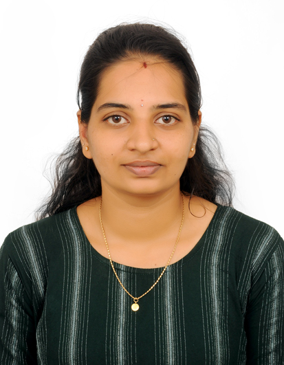

Thejaswini Bhat C.L
CONTACT
 thejaswinicl87@gmail.com
thejaswinicl87@gmail.com
 8549842182
8549842182
 Hirgana Village and Post,
Hirgana Village and Post,
Karkala Taluk, Udupi District.
TECHNICAL SKILLS
- Programming Language:- C, C++.
- MS-Office:- Word, Excel,Power point.
- Email:-Email etiquette, Mail merger.
LANGUAGE KNOWN
- English
- Kannada
- Tulu
CERTIFICATION
- C Programming and C++,
- Front-End Web Developer.
CAREER OBJECTIVE
A Proactive and fast learning individual seeking the opportunity for Front-End-Developer that allows me to develop and expand my ability, Knowledge, Skills to help the Company achieve business goals while sticking to vision, mission and values.
EDUCATIONAL SUMMARY
- Completed Front-End-Developer IT Course at Unnathi Career Academy Udupi Where I have been trained in HTML, CSS, Bootstrap, Java Script.
- Completed EEP (Employability Enhancement Program) at Unnathi Career Academy Udupi, Where I have been trained in business communication and etiquette, email etiquette, group discussion and presentation.
- Completed Diploma in Fashion Design Course from Manipal Career Academy of Computer education Karkala.
- Completed Diploma in Computer Application with Accounts (MS Windows, MS Word, MS Excel, MS PowerPoint, Tally ERP9, Nudi, Photoshop, PageMaker, Corel Draw) from Manipal Career Academy of Computer education Karkala.
- Completed C Programming and C++ from Manipal Career Academy of Computer education Karkala.
- I was an active participant in the National Social Service (NSS) Camp during college days for many social activity and was a good team player.
- I am a player in Kabadi games at School.
EDUCATIONAL QUALIFICATION
- Diploma in Computer Science and Engg,
Govt. Polytechnic, Karkal (2020). - Department of Pre-University Education,
Jyothi Independent PU College, Karkala (2017). - Karnataka Secondary Education Examination,
S.B. High School, Karkala (2014).
REFERENCE
Arathi Kamath
Senior Operations Manager at Manipal Business solutions PVT Ltd.
DECLARATION
I hereby declare that the information furnished above is true to the best of my knowledge.
(Thejaswini Bhat C.L)